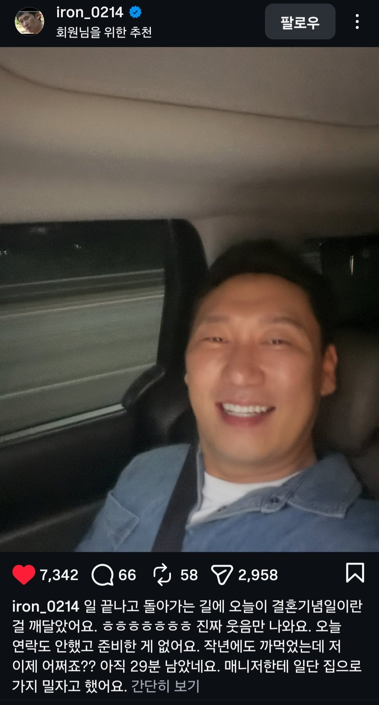

RIP...

RIP...
생선 대가리 카레가 저녁으로 나왔습니다...
매니저. 차돌려! 603회 자연인 집으로 피신한다
핸드폰 꺼!
글누르기전에 엥? 왜? 하고 놀라서눌럿네 스버 ㅋㅋㅋ
이런건 경찰에 신고하면 보호해줌?
개꿀잼 상황이니까 와이프도 경찰서로 데려올듯
배란다에서 숨쉰채로 발견
먼가 초연한 웃음이다 ㅋㅋ
왜 그랬대 ㅠ
그 곳에서는 편안하세요 저승윤님
지금까지 즐거웠습니다
매달 주는 어마어마한 생활비가
선물입니다
결국 자연인 그자체가 되는구려